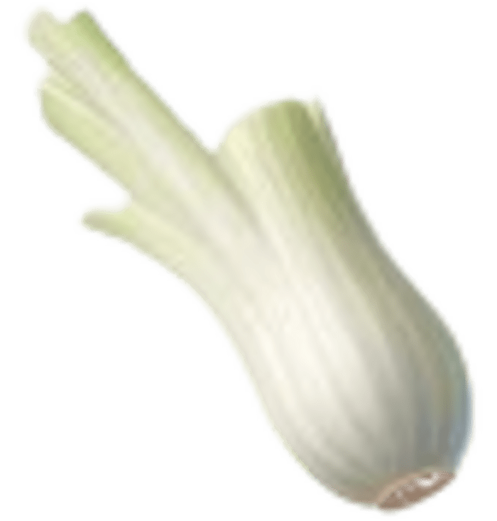
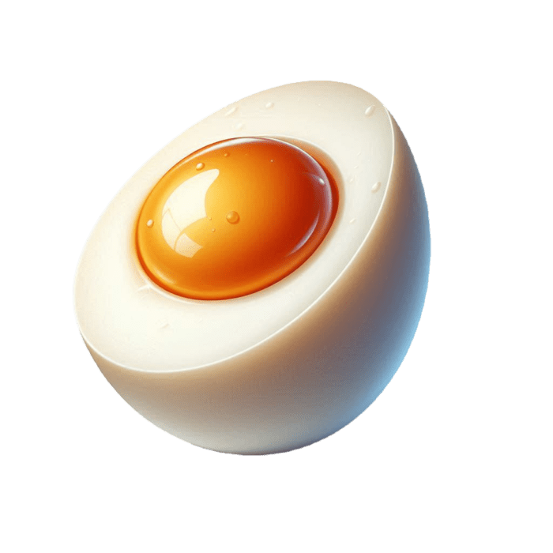
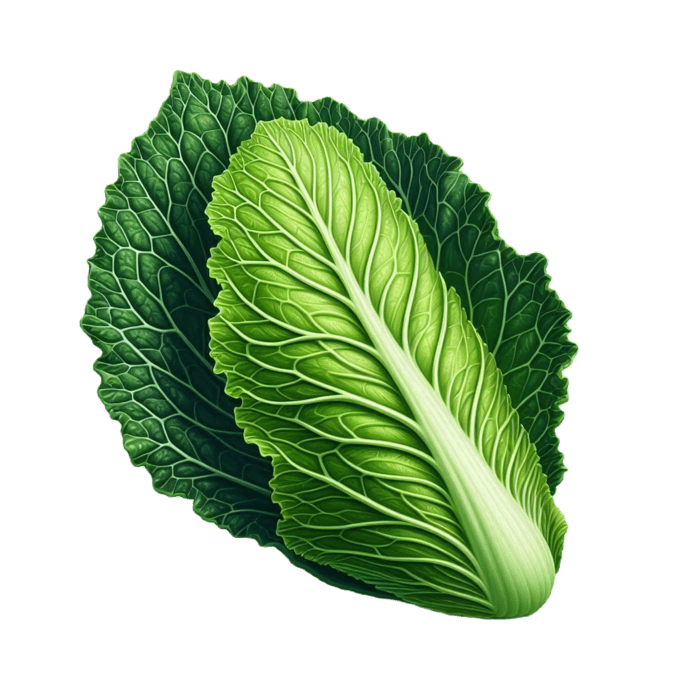
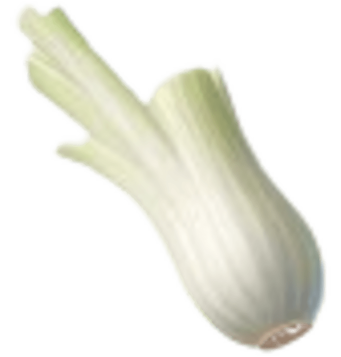
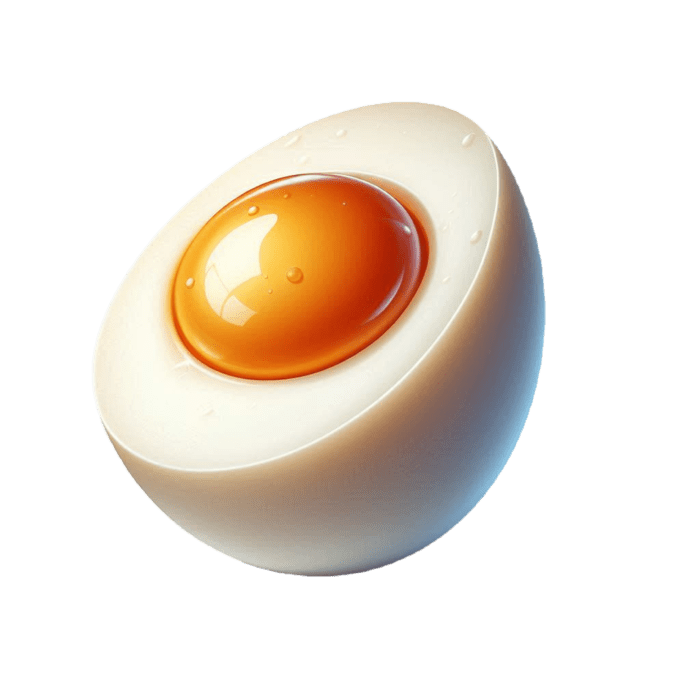
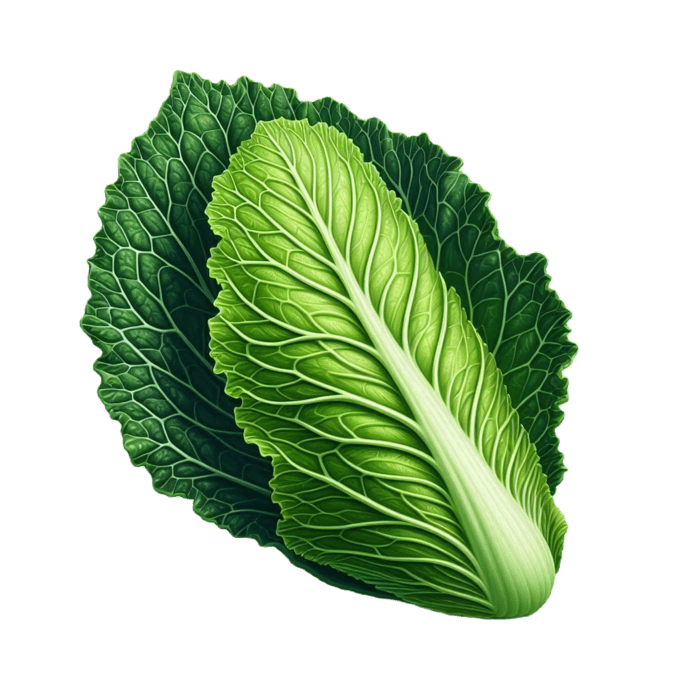

Présentation de l'application What'soup

En manque d'inspiration pour le souper ? What'soup est l'application parfaite pour libérer le stress des menus et mettre tout le monde d'accord. Une expérience fun et intéractive qui vous permet de créer votre recette de ramen de manière guidée. So what's(o)up?
 






Etapes
Inspirez-vous
Explorez parmi nos dizaines de recettes préfaites, apprenez-en plus sur les combinaisons possibles et découvrez la recette de la semaine. De quoi vous donner des idées avant de vous lancer !

Créez votre ramen
Créez votre recette de ramen à travers un quizz fun et interactif et prévoyez votre souper en toute simplicité !
Testez vos recettes
Suivez nos étapes de préparation, testez vos créations en ajoutant des étiquettes, notes et détails et retrouvez facilement toutes vos recettes de chef Ramen.
Prêt à créer votre ramen ?
C'est très simple: à chaque étape, choisissez vos ingredients. A la fin du quizz, quand vous êtes certain de votre recette, cliquez sur 'Cuisiner' et la recette sera alors enregistrée dans "mes recettes" !